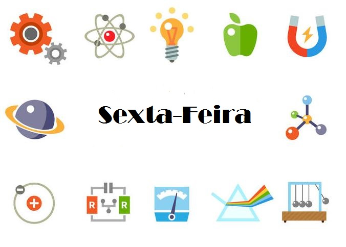

Química
Biologia
Sociologia
1° Série
Matéria e suas transformações
Origem da vida
Compreensão da vida social
2º Série
Tabela periódica
Vírus
Socialismo e capitalismo
3º Série
Cáculos estequiométricos
Evolucionismo
Cidadania, política e estado